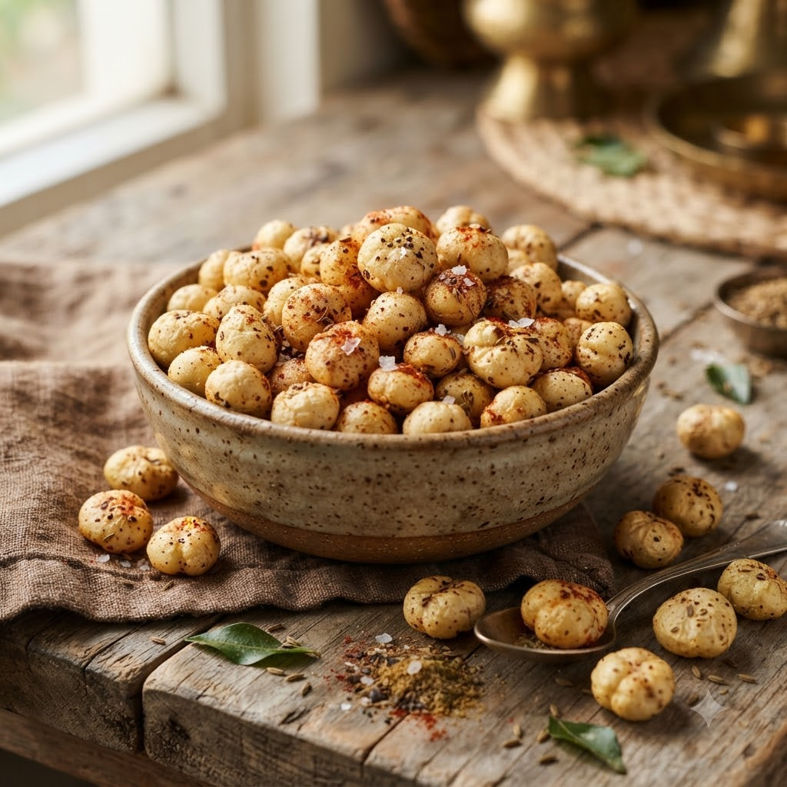

Roasted Makhana (Fox Nuts)

Roasted Makhana (Fox Nuts)
Airfryer – Roast 160°C 9 min — Serves 4
Ingredients
- 2 cups makhana (fox nuts)
- 1 tbsp ghee or oil
- 1/2 tsp black salt
- 1/4 tsp red chilli powder (lal mirch powder)
- 1/4 tsp roasted cumin powder (bhuna jeera powder)
Method
1Preheat: Preheat the Airfryer to 160°C for 4 minutes before adding the food to the basket.
2Toss makhana with ghee and spices until evenly coated.
3Spread in a single layer in the basket.
4Roast at 160°C for 9 minutes, shaking every 3 minutes, until crisp.
5Cool completely before storing in an airtight container.
Tip: Makhana crisps up further as it cools — don’t judge crunchiness straight out of the basket.